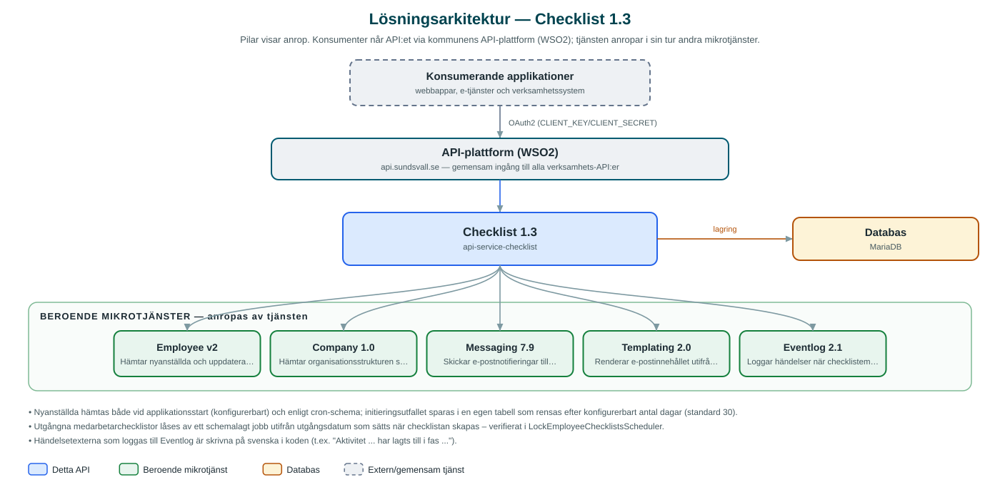

Checklist
Hanterar introduktionschecklistor för nyanställda – checklistemallar per organisation, automatisk tilldelning när nya medarbetare anställs och uppföljning av hur långt varje introduktion kommit.
Om API:et
Checklist stödjer kommunens introduktion av nyanställda. HR och verksamheter bygger checklistemallar med faser och aktiviteter per organisationsenhet, och när en ny medarbetare anställs får hen och närmaste chef automatiskt en egen checklista utifrån mallarna för sin del av organisationen.
Nya medarbetare hämtas löpande från kommunens Employee-API genom ett schemalagt jobb (och vid uppstart), och organisationsträdet byggs med hjälp av Company-API:et. Chefen notifieras per e-post via Messaging, med brevinnehåll som renderas genom Templating-API:et. Chefer kan dessutom delegera en medarbetares checklista till andra medarbetare.
Varje aktivitet bockas av med status, framdriften kan följas per medarbetare och organisation, och passerade checklistor låses automatiskt när utgångsdatumet infallit. Ändringar i mallar loggas till kommunens Eventlog, och hela checklistor kan exporteras och importeras som JSON mellan miljöer.
Det här gör API:et
- Checklistemallar – Mallar med faser och aktiviteter byggs, versioneras och aktiveras per organisationsenhet; anpassad sorteringsordning stöds.
- Automatisk tilldelning – Nya medarbetare hämtas schemalagt från Employee-API:et och får automatiskt en personlig checklista utifrån sin organisation.
- Chefsnotifiering – Närmaste chef notifieras per e-post via Messaging med mallrenderat innehåll från Templating.
- Delegering – En medarbetares checklista kan delegeras till andra medarbetare som då kan följa och bocka av aktiviteter.
- Uppföljning och låsning – Framdrift följs per aktivitet och medarbetare; utgångna checklistor låses automatiskt av ett schemalagt jobb.
- Export och import – Checklistor kan exporteras och importeras som JSON, till exempel mellan test- och produktionsmiljö.
API-dokumentation
API:ets samtliga resurser, parametrar och datamodeller finns beskrivna i en OpenAPI-specifikation som är hämtad ur källkodsförrådet. Den kan utforskas interaktivt i Swagger UI eller laddas ner som YAML. Programvaruförteckningen (SBOM) listar tjänstens samtliga tredjepartskomponenter med version och licens.
Teknisk dokumentation
Nedan beskrivs hur tjänsten är uppbyggd, vilka andra tjänster den anropar och vad som krävs för att driftsätta den. Informationen är härledd ur källkoden och dess konfiguration på GitHub.
Arkitektur

API:et är en mikrotjänst (Java 25, Spring Boot via kommunens gemensamma tjänsteplattform dept44 (8.0.8), byggd med Maven). Konsumenter når tjänsten via kommunens gemensamma API-plattform (WSO2) på api.sundsvall.se – tjänsten anropas aldrig direkt. Tjänsten anropar i sin tur andra mikrotjänster i kommunens tjänstelandskap. Lagring: MariaDB med Flyway-migrationer; mallar, medarbetarchecklistor, framdrift, delegeringar och initieringsinformation lagras per kommun.
Teknikstack
- Språk: Java 25
- Ramverk: Spring Boot via kommunens gemensamma tjänsteplattform dept44 (8.0.8), byggd med Maven
- Databas: MariaDB med Flyway-migrationer; mallar, medarbetarchecklistor, framdrift, delegeringar och initieringsinformation lagras per kommun
- Övrigt: dept44-scheduler med ShedLock för fem schemalagda jobb, Resilience4j mot beroende tjänster, e-postmall incheckad under src/main/resources/templates
Beroenden till andra mikrotjänster
Tjänsten anropar följande mikrotjänster. Versionerna är hämtade ur källkodens integrationsklienter.
| Tjänst | Version | Användning |
|---|---|---|
| Employee | v2 | Hämtar nyanställda och uppdaterade chefsuppgifter via schemalagda jobb. |
| Company | 1.0 | Hämtar organisationsstrukturen som checklistorna kopplas till. |
| Messaging | 7.9 | Skickar e-postnotifieringar till chefer om nya medarbetares checklistor. |
| Templating | 2.0 | Renderar e-postinnehållet utifrån mallen för chefsnotifieringen. |
| Eventlog | 2.1 | Loggar händelser när checklistemallar och aktiviteter skapas, ändras eller tas bort. |
Programvaruförteckning
Tjänsten bygger på 266 tredjepartskomponenter fördelade på 13 olika licenser. Till skillnad från tabellen ovan, som listar andra mikrotjänster, avses här de programbibliotek som ingår i bygget. Se programvaruförteckningen för hela listan.
Konfiguration och driftsättning
- application.yml med URL och OAuth2-klientuppgifter för Employee, Company, Messaging, Templating och Eventlog
- Cron-uttryck och lås för schemalagda jobb: hämta nyanställda, chefsutskick, låsning av utgångna checklistor, rensning av initieringsinformation och chefsuppdatering
- E-postmall för chefsnotifiering (checklist.manager-email.email-template)
- MariaDB-anslutning; databasschemat versionshanteras med Flyway
- Anrop görs per kommun – municipalityId ingår i alla API-vägar
Noterbart ur källkoden
- Nyanställda hämtas både vid applikationsstart (konfigurerbart) och enligt cron-schema; initieringsutfallet sparas i en egen tabell som rensas efter konfigurerbart antal dagar (standard 30).
- Utgångna medarbetarchecklistor låses av ett schemalagt jobb utifrån utgångsdatum som sätts när checklistan skapas – verifierat i LockEmployeeChecklistsScheduler.
- Händelsetexterna som loggas till Eventlog är skrivna på svenska i koden (t.ex. "Aktivitet ... har lagts till i fas ...").
- Senast använda kommunikationskanal och chefens e-postadress sparas per checklista för uppföljning av notifieringar.
Källkod
Källkoden är öppen och finns hos Sundsvalls kommun på GitHub. I källkodsförrådet finns även instruktioner för att klona, konfigurera och starta tjänsten i egen miljö.